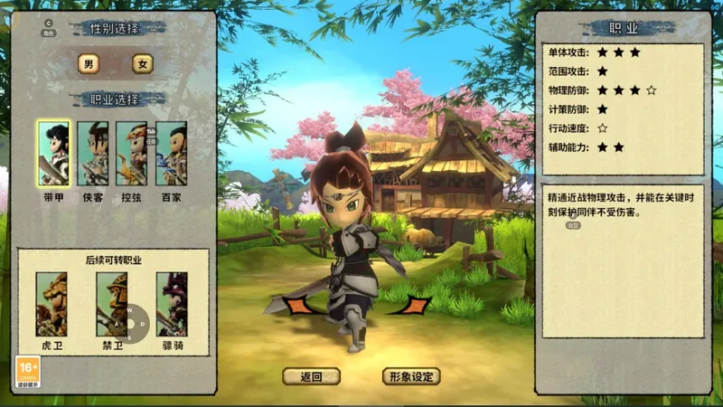
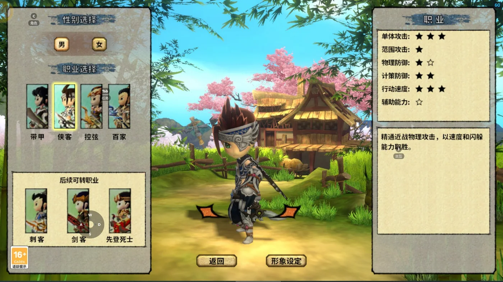
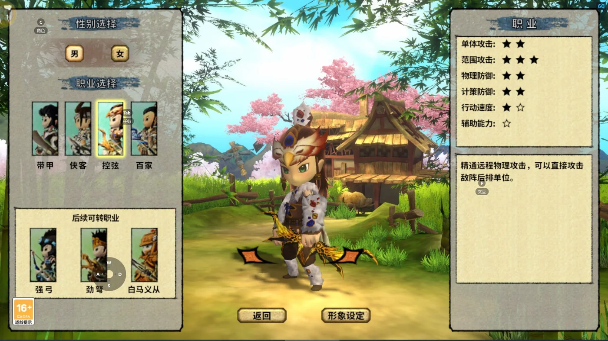
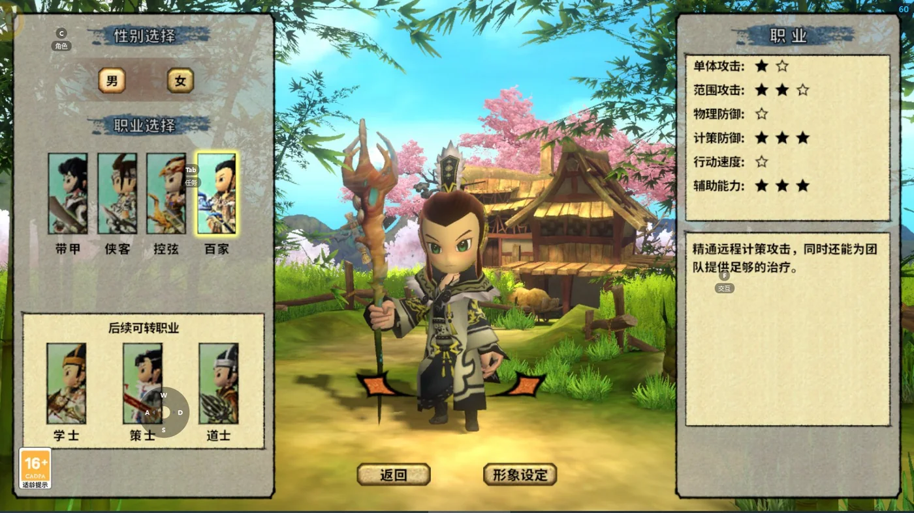
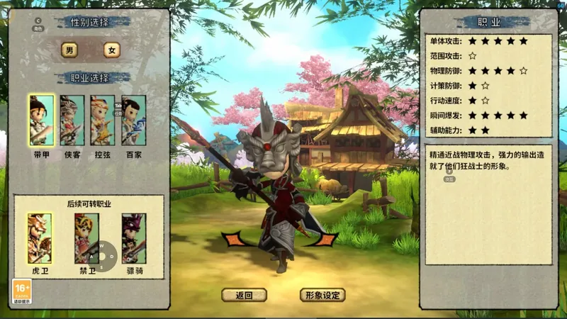
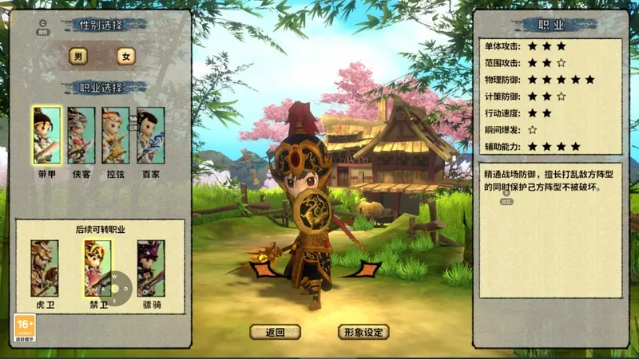
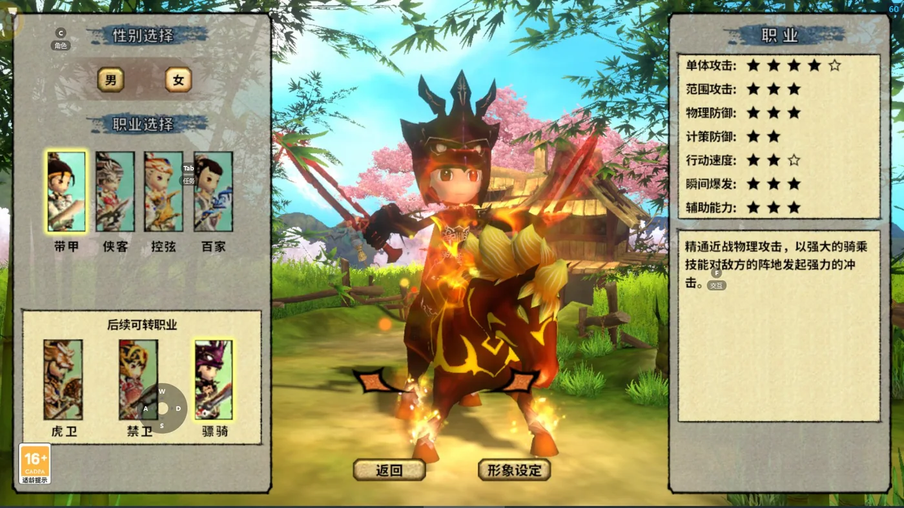

放大带甲近战 · 抗伤
- 单体攻击★★★
- 范围攻击★
- 物理防御★★★½
- 计策防御★
- 行动速度½
- 辅助能力★★
精近战物理攻击，并能在关键时刻保护同伴不受伤害。
后续可转 虎卫 · 禁卫 · 骠骑
Q版三国 · ATB回合策略 · 收录 7 篇攻略
幻想三国ATB半即时回合制：云职业转职、将星收集、三端互通。胜负更多取决于阵容结构与站位，而不是单纯数值堆砌；赛季沙盘大地图上，联盟攻城占都城定天下。
星级取自游戏内创建角色的职业面板，★ 为满档、½ 为半档；点截图可看大图

放大精近战物理攻击，并能在关键时刻保护同伴不受伤害。
后续可转 虎卫 · 禁卫 · 骠骑

放大精近战物理攻击，以速度和闪避能力取胜。
后续可转 刺客 · 剑客 · 先登死士

放大精远程物理攻击，可以直接攻击敌方后排单位。
后续可转 强弓 · 劲弩 · 白马义从

放大精远程计策攻击，同时还能为团队提供足够的治疗。
后续可转 学士 · 策士 · 道士

放大精近战物理攻击，强力的输出造就了他们狂战士的形象。

放大精通战场防御，擅长打乱敌方阵型的同时保护己方阵型不被破坏。

放大精近战物理攻击，以强大的骑乘技能对敌方的阵地发起强力的冲击。
客服一对一发下载链接与专属礼包 · 本页已被逛过 — 次